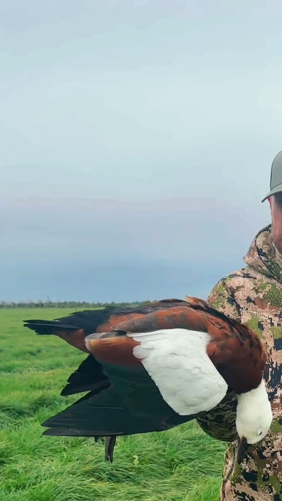

Episode 38 · June 16, 2025 · 2131
Waterfowl Hunting in New Zealand!

About This Episode
In this episode I talk about my recent trip to New Zealand. While I was there I was able to hunt Paradise Shell Ducks, also knows as "Parry's" by the locals and Black Swan. If you are down for a good hunting story and a weird way to hunt Paradise ducks listen to this one
Questions about the training topics in this episode? Tyce works with bird dog owners and hunters through Utah Bird Dog Training. Reach out to work with him directly.
Resources & Links
- Kuranda Dog Beds — Elevated, chew-proof dog beds.
- Utah Bird Dog Training — Tyce's professional training services.
Transcript
Full transcript for Episode 38: Waterfowl Hunting in New Zealand!.
Tyce
Hey everyone, welcome to the Bird Dog Podcast. My name is Tyce. I just got back from New Zealand about a week ago — a trip that had been on my bucket list for years. The main mission was big game: red stag, chamois, and Himalayan tahr, which we were fortunate enough to take on a mix of DIY and guided hunting. But as a bonus at the end of the trip, I got to do some waterfowl hunting in New Zealand, and I want to share that story today because it's a good one — including the most embarrassing hunting moment of my life.
While we were wrapping up a tahr hunt, I mentioned to our helicopter pilot that I'd been seeing paradise shelducks — called "Perrys" locally — in the pastures everywhere and had been curious about them. He mentioned his dad guides duck hunting and offered to see if he could get us out for a morning. It came together fast. The guide picked us up before light in a classic old Land Cruiser with a snorkel on it — these guys use them to ford rivers when the rain comes and the country floods. We drove out across pasture fields to a small reservoir, maybe three to five acres, with a makeshift blind set up on the edge.
First thing I noticed was the decoys — there were a bunch of them set out, and they'd clearly been there a while. I asked if he'd set them up, and he said no, they'd been out about three to four weeks. I thought: most pressured ducks would be pretty skeptical of a stale spread that's been sitting in the same spot for a month. And sure enough, birds weren't exactly pouring in. He acknowledged it too — said sometimes he'll just shoot birds away from the decoys anyway.
Here's the story I'll never live down. It was barely first light. We could hear a paradise duck calling from outside the decoys to our left — you could just make out a shape on the water, maybe 60 yards out. I slipped out around the dyke, crawled through the grass, and came up on what I was sure was the duck. I pulled up the pump gun and shot it. The thing kind of winged up. I was pretty pleased with myself. Walked back over to the decoys — the guide says three paradise ducks came right into the edge of the spread just as I fired. I missed the whole group in the dark.
Then it got light enough to really see. The thing I'd shot was a decoy. A decoy that had been out there so long it was half-sinking and angled. The bird had been calling from farther out — I just couldn't see the distance in the dark. First and only time I've ever shot a decoy in my life. We all got a good laugh out of it.
From there the hunt improved. I shot a mallard — there are a lot of mallards in New Zealand, same bird as home. My buddy connected on a shoveler but it was a cripple and the guide's springer spaniel, Molly, didn't really want anything to do with it. The bird swam off and we couldn't recover it. That moment stuck with me: the difference a properly trained retrieving dog makes. Without one, crippled birds get away and they get wasted. We also had Canadian geese come off the pond in two waves, but they passed about a hundred yards to our left — just out of range both times.
Some interesting notes on New Zealand waterfowl: Canadian geese are invasive there, originally brought over by European settlers in the early 1900s and spread deliberately for sport hunting. By 2007–2011 they had exploded in population, were destroying crops, and were reclassified as unprotected. No license required, no season, unlimited birds, any method. They're everywhere on the south island. The birds still get smart though — with no predators and plenty of grass, they're well-fed and spread out, and the guides said patterning them to specific fields can be tough.
Black swans were another story. They were brought from Australia in the 1860s and have a regulated season — bag limit of five per day as of 2025. The guide pushed some off a neighboring pond and I snuck up and jump-shot one. Beautiful birds: massive wingspan, bright red beak, black plumage with white wing feathers. The springer went out and sniffed it, decided that wasn't for her, and left it for the wind to blow to shore. The other two swans on the pond just swam off when I shot. Didn't fly, didn't panic. I'm not sure if that's normal or just because they weren't under much pressure, but it wasn't exactly a sporting experience. Cool bird to see and have, but I wouldn't rank it high as a hunt.
We spent the rest of the morning driving around trying to jump-shoot paradise ducks in pasture fields. They're big, gorgeous birds — larger than a standard duck, closer to goose-sized, incredible plumage. They feed in pairs in the open green fields. The problem was there was no cover to approach from — totally flat country, and the birds just walked away as we got close. I never did get a pair. It was a lesson in how much harder it is to hunt birds without the right setup — no blind, no decoys, no retriever, stale spread, flat country with no approach. All the things that would've made that hunt successful just weren't there.
What I came home with: a mallard, the knowledge that I need to shoot decoys in better light, and a strong reminder that a trained retrieving dog and a little preparation for the hunt makes all the difference in the world. New Zealand was incredible — the big game hunting alone was worth every bit of the trip. But if you ever go and want to hunt the paradise ducks, go with a plan, a proper guide, and a dog that knows what to do with a bird. Thanks for listening.
About the Host
Tyce Erickson
Tyce Erickson is a professional bird dog trainer and the owner of Utah Bird Dog Training in Utah. For nearly two decades he has worked with pointing dogs, retrievers, and family hunting dogs — helping owners build dogs that are capable and enjoyable in the field. The Bird Dog Podcast is an extension of that work: honest conversations on training, hunting, breeding, and everything that goes into a life spent working dogs.
More About Tyce